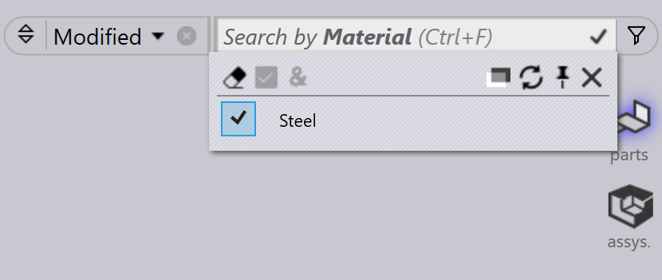

Suodattimien tallentaminen
Tallennetut suodattimet mahdollistavat usein käytettyjen ehtojen uudelleenkäytön osissa, töissä ja asetteluissa, mikä tehostaa työnkulkua. Jokaisessa moduulissa on oletussuodattimet, mutta tarvittaessa sivustonvalvojat tai ohjelmoijat voivat luoda lisäsuodatinluetteloita. Tallennettujen suodattimien uudelleenkäyttö säästää aikaa ja auttaa ylläpitämään johdonmukaisuutta hauissa.
-
Napsauta
 -kuvaketta nähdäksesi oletussuodattimet.
-kuvaketta nähdäksesi oletussuodattimet.
Suodattimien tallentamisen vaiheet
-
Napsauta
 -kuvaketta, valitse mikä tahansa suodatinkohde.
-kuvaketta, valitse mikä tahansa suodatinkohde.
-
Valitse valitun suodatinkohteen avattavasta valikosta vaihtoehto. Valitun ehdon viereen ilmestyy valintamerkki.

-
Ota ehto käyttöön napsauttamalla
-kuvaketta ja valitsemalla
lisää ehto (Ctrl+PLUS)]. Voit toistaa tämän
vaiheen lisätäksesi useita ehtoja.
-
Tallenna nämä valitut suodattimet ehdoilla napsauttamalla Tallenna suodatin… (Ctrl+S)].

-
Syötä nimi ja napsauta sitten Tallenna.

-
Tallenna suodatin -ikkunasta voit myös poistaa aiemmin tallennettuja suodattimia.
-
Nämä suodattimet tallennetaan oletussuodatinluetteloon. Tässä Työaine tallennetaan oletusluetteloon.

| SiteAdminin ja Adminin luomat suodattimet ovat kaikkien käyttäjien käytettävissä. Programmerin ja Operatorin luomat suodattimet ovat jaettuja vain Programmerin ja Operatorin käyttäjäroolien kesken. |
Suodatinkomennot
| Komento | Kuvake | Pikanäppäimet | Kuvaus |
|---|---|---|---|
Clear Selection |
|
Ctrl+X |
Poistaa kaikkien valittujen valintojen valinnan ja päivittää suodatinkohteiden näkymän. |
Select Highlighted |
|
Ctrl+A |
Valitsee kaikki korostetut valinnat. Tämä komento pysyy poissa käytöstä, jos kohteiden korostaminen ei ole sovellettavissa valitulle kentälle. |
Match All |
|
& |
Näyttää vain kohteet, jotka täyttävät kaikki valitut ehdot. |
Pin In/Out Menu |
|
Ctrl+Down/Up |
Kiinnitettynä avattava valikko pysyy auki, vaikka nykyinen kohdistus siirtyy toiseen ikkunaan. |
Close Menu |
|
Esc |
Sulkee avattavan valikon. |